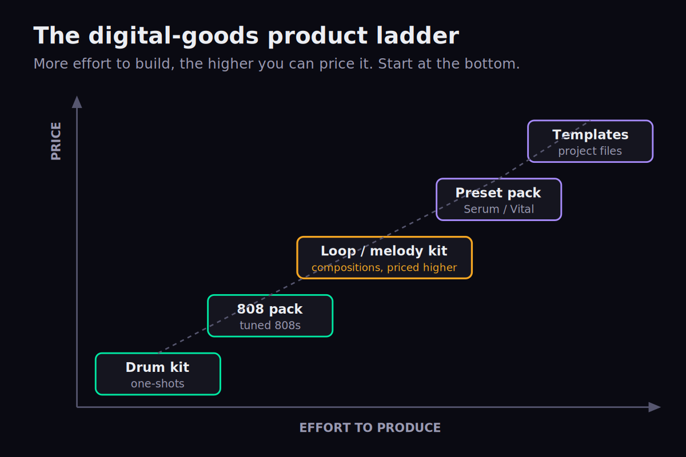
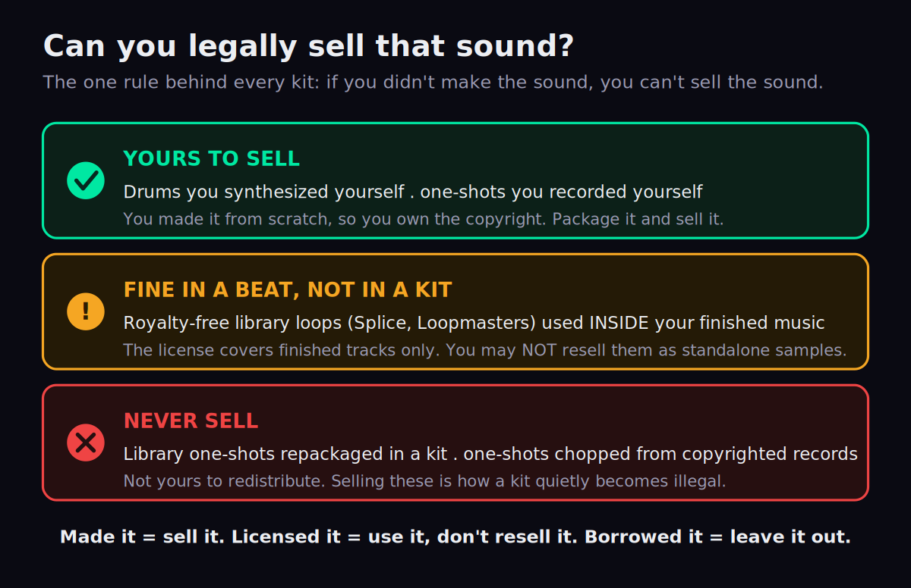
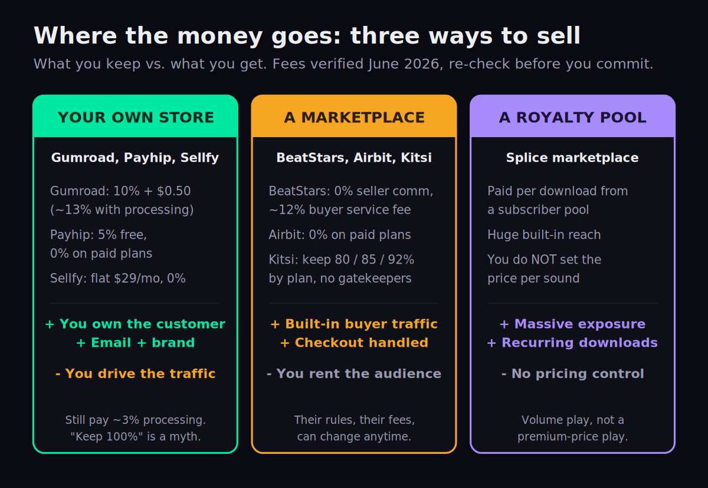

You spend hours dialing in a kick, layering a snare, tuning an 808 until it sits exactly right — and then it lives in one project file, used once. A drum kit flips that math. You package those sounds once and sell them to a thousand producers who each pay to skip the work you already did. It is the closest thing in music production to a product that builds itself once and earns while you sleep. But there is a catch nobody puts on the sales page: a kit is only legal to sell if every sound inside it is genuinely yours to sell — and that single rule is where most kits quietly cross a line. This is the full playbook: what goes in a kit, where to sell it without giving away half your money, how to price it, and the one legal rule that keeps you out of trouble.
Build a kit only from sounds you recorded or synthesized yourself — never royalty-free library one-shots resold as samples, never chops from records. Sell it on your own store (Gumroad, Payhip, Sellfy — you keep more and own the customer) or a marketplace (BeatStars, Kitsi, Airbit — built-in traffic, a cut of the sale). Price it fair to the sound count, give one kit away free to build an email list, and drive buyers with a YouTube channel. Make it once; sell it forever.
Why a drum kit is the producer's best passive product
Most ways a producer earns money are a trade of time for cash. A custom beat, a mixing gig, a sync placement — each one is a fresh job. A drum kit is different in kind, not just degree. You do the work once, and every sale after the first costs you nothing to fulfil. There is no inventory, no shipping, no per-unit cost. The file that sells on a Tuesday is the same file that sold on Monday and will sell next March. That is what “passive” actually means here: not effortless, but front-loaded — the effort happens before the first dollar, and the income trails it for years.
This is a fundamentally different business from leasing beats. When you sell beats online or sell type beats, you are selling licenses to a finished composition — a lease here, an exclusive there, each beat its own little negotiation. A kit is a productized digital good: one SKU, one price, unlimited copies, no per-sale paperwork. The two pair naturally. The same audience that buys your beats will buy the sounds you made them with, and the same channel that sells one can sell the other. If beats are your service, kits are your product line.
There is a compounding effect, too, that single beat sales never get. Every kit you release adds to a back catalog that keeps selling while you build the next one. A producer with five kits across two platforms is not earning five times one kit’s sales — they are earning from five storefront listings that each turn up in search, each get linked from a different video, each catch a different buyer. The catalog is the asset. One kit is a product; a shelf of kits is inventory that works around the clock, and the back catalog of a producer who has been releasing steadily for two years is doing real monthly numbers from work finished long ago. That is the actual case for kits inside a producer’s income stack: they are the line item that grows while you sleep, sitting underneath the active income from beats, mixing, and placements.
The honest framing matters, though. A kit is the best structure for passive income in production, but structure is not a guarantee of sales. Reported earnings vary enormously and most kits sell little — the ones that earn are the ones attached to an audience and marketed deliberately. Figures floating around producer blogs (a few hundred to a few thousand in a strong launch month, a slow trickle after) are third-party estimates, not promises, and you should treat anyone quoting you a number as a marketer, not a forecaster. The producers earning meaningfully from kits almost universally share one trait: they spent months or years building an audience first, usually on YouTube, and the kit is simply the product they finally pointed that audience at. The kit did not create the income; the audience did, and the kit converted it. What you control is the quality of the product, the legality of what is in it, and the funnel that points people at it. Those are the rest of this guide.
What actually goes in a sellable kit
A drum kit, at its simplest, is a folder of one-shots: kicks, snares, claps, hi-hats, open hats, percussion, the occasional crash or rimshot. A buyer drags them into their DAW and builds. The number of sounds matters less than people think — a tight, consistent 30-sound kit where everything is usable beats a bloated 150-sound kit padded with filler. Buyers remember the kit where every snare slapped; they delete the one where they had to hunt. And the sounds that sell are the ones that already sit right in a beat — punchy, tuned, and processed, not flat raw recordings. The same drum mixing instincts you use on a finished track — transient shaping, saturation, tuning a kick to the key — are what make a one-shot feel professional the instant a buyer drops it in.
Once you understand the basic kit, you can see the whole product ladder. Each rung takes more skill to build and, because of that, can command a higher price.

At the bottom sits the drum kit — raw one-shots, the easiest entry point. A step up is the 808 pack: tuned, processed 808s ready to drop into a beat, which is its own micro-skill (if you make your own, the same techniques behind making trap 808s from scratch are what you are packaging). Higher still are loop and melody kits — and these earn more for a clear reason: a loop is a small composition, not a random sound. You wrote it. That creative work is worth more than a snare, which is why a loop kit of fifteen to thirty melodies can sit well above a drum kit’s price. The lo-fi and melodic crowd buys these constantly; the same instincts behind a good lo-fi sample pack apply. Above that are preset packs (Serum, Vital, Omnisphere banks) and project files or templates — the most involved to build and the most premium to sell. If you are assembling your first product of any kind, the mechanics of making your first sample pack carry straight over.
If this is your first product, build a drum kit — it is the fastest to assemble and the cleanest to keep legal (a one-shot you made is unambiguously yours). Graduate to loop and preset kits once you have one product live and a place to sell it.
It is worth understanding why the ladder prices the way it does, because it is not arbitrary. Each rung sells more because it removes more work from the buyer. A drum kit hands them raw materials; they still have to write the beat. A loop or melody kit hands them a chord progression or a melody — a piece of the composition itself — so the buyer is paying for creative work they could not have done as fast, and that is worth more per item. A preset pack saves them the sound-design hours; a template saves them the arrangement and mixing. The further up the ladder, the closer you get to selling finished creative decisions rather than ingredients, and finished decisions command a premium. This also tells you where the margin is as you grow: the same hour of your time produces a far more valuable product at the top of the ladder than the bottom, so once a drum kit is selling, climbing is where the leverage lives.
The one rule: you can only sell sounds you own
This is the section every competitor skips, and it is the one that can actually get you in trouble. A kit is a thing you are redistributing for resale. That is a much higher bar than using a sound in your own track. The rule is blunt: if you didn’t make the sound, you can’t sell the sound.

Walk the three zones. Green — yours to sell: any sound you synthesized from scratch or recorded yourself. You own the copyright in that recording, so you can package and sell it freely. This is the safe core of every legitimate kit.
Amber — fine in a beat, never in a kit: royalty-free library one-shots and loops from services like Splice or Loopmasters. Producers misread “royalty-free” as “do anything.” It does not mean that. Those licenses let you use the sound inside a finished composition or recording — not resell it as a standalone sample. Splice’s own terms of use state that you may not redistribute their sounds in new sample packs, nor sublicense them in isolation as loops or sound effects, even if you modify them. In other words: that perfect Splice clap is legal in your beat and illegal in your kit. We wrote a full breakdown of exactly what these licenses do and don’t allow in are Splice samples royalty-free — read it before you assume a library sound is fair game.
Red — never: one-shots chopped out of copyrighted records, and library samples repackaged for resale. A drum hit lifted from a famous record is someone else’s master recording; selling it is straightforward infringement, and a chop does not launder it. If you genuinely need a sound from an existing record in your own music, that is what sample clearance is for — see how to clear a sample — but cleared-for-your-track is still not cleared-for-resale-in-a-kit.
The most common way a kit becomes illegal is innocent: a producer drops a handful of Splice or Loopmasters one-shots into a kit alongside their own sounds because “they paid for them.” Paying for a subscription buys you the right to use those sounds in music, not to resell them. One borrowed one-shot can make the whole kit a liability. Keep the resale folder to sounds you made.
One more nuance: even for royalty-free loops you are permitted to use, some providers still expect a production credit. None of that applies if you build the kit entirely from your own sounds — which is exactly why “make your own” is the advice that keeps showing up. It is the only path with no asterisks.
Two misunderstandings cause most of the trouble, and both are worth killing here. The first is reading “royalty-free” as “copyright-free.” They are completely different. Royalty-free means you do not owe ongoing royalties each time the sound is used — it says nothing about ownership. The original creator and the library still hold the copyright; you hold a license to use, under conditions. Copyright-free (or public domain) would mean no one owns it and you could do anything. Almost nothing you download from a professional library is copyright-free, so the resale rights you would need to put a sound in a kit are simply not part of the deal you bought. The second misunderstanding is believing that modifying a library sample launders it. It does not. Splice’s terms specifically prohibit sublicensing their sounds in isolation as samples “even if you modify the Sounds.” Pitching, reversing, or chopping a one-shot does not make it yours; it makes it a derivative of something you do not own, which is no more sellable than the original.
So what actually happens if you ship a kit with borrowed sounds in it? Rarely a lawsuit on day one — more often a chain of cheaper, quieter consequences that still end the business. The library or rights-holder files a takedown and the platform pulls your listing; marketplaces can suspend or ban a seller account for a terms violation, which vaporizes the storefront and the audience attached to it; buyers who paid for an illegal kit can charge back, and a pattern of chargebacks gets your payment processor to freeze you. None of that requires anyone to sue you. The reputational cost is worse: in a small community, “that producer’s kits aren’t clean” travels fast. The flip side is that proving your sounds are yours is easy when they are — keep your project files, your raw recordings, your synth patches. Provenance you can show is the difference between a confident takedown counter-notice and a deleted account.
Make it look like a product, not a folder
A buyer is not paying for raw audio — they are paying for curation and the confidence that dragging your sounds in will make their beat better. Presentation is most of that confidence. Five things separate a kit that sells from a zip nobody trusts:
- Consistent naming.
YourName_Kick_01,YourName_Snare_Punchy— predictable, searchable, branded. A folder ofrecording_final_2.wavreads as amateur and ships back to the bottom of the buyer’s memory. - Logical folders. Kicks, Snares, Hats, 808s, Perc, Melodies. The buyer should find what they want in one click, not scroll a flat list of 90 files.
- Level and tune consistency. Gain-stage the kit so one-shots sit at comparable loudness; loosely tune drums so they play nicely together. This is the single biggest tell of a pro kit versus a dump.
- A demo beat. A 30–60 second beat made only from the kit, posted with the listing or as the YouTube video, does more selling than any description. Buyers want to hear the sounds in context.
- Artwork and a license file. Clean 1:1 cover art makes the product feel real. A short README or license text inside the zip — stating the buyer can use the sounds in their music but not resell the kit — sets terms and signals professionalism.
Where to sell: your store vs. a marketplace
This is the decision that quietly determines how much of each sale you keep. There are three models, and the honest comparison — the one the platform blogs won’t give you because each is pushing its own store — looks like this.

Your own store — Gumroad, Payhip, Sellfy. You set up a storefront, you keep more of each sale, and crucially you own the customer: their email, the brand relationship, the ability to sell them the next kit directly. The cost is that you must drive your own traffic; a fresh Gumroad page has no built-in audience. And be honest about the fees, because “keep 100%” is a myth — every platform takes something. As of June 2026, Gumroad charges 10% plus $0.50 per sale (roughly 13% once payment processing is added). Payhip charges 5% on its free plan and drops to 0% on its $29/month paid plan. Sellfy runs a flat ~$29/month with no per-sale commission. Whichever you pick, you still pay card processing of around 3% — nobody keeps every cent. What you buy with an own-store is ownership, not a free ride.
A marketplace — BeatStars, Airbit, Kitsi. Here the trade flips: you get built-in buyer traffic and handled checkout, but you operate inside someone else’s rules and economics. The numbers, current as of June 2026:
| Platform | What you pay / keep | The trade |
|---|---|---|
| BeatStars | 0% seller commission on annual plans (Starter $19.99/yr, Growth $79.99/yr, Pro $179.88/yr) | The catch: a ~12% service fee is added for the buyer on marketplace-discovered sales (or you absorb it). Biggest audience. |
| Kitsi | Keep 80% (free), 85% ($4.99/mo), or 92% ($7.99/mo) | Built specifically for kits and packs, no gatekeepers, accepts crypto. Smaller but focused audience. |
| Airbit | 0% commission on paid plans (from $7.99/mo) | Established beat marketplace; clean checkout and contract tooling. You still rent the audience. |
Notice what BeatStars’ “0% seller commission” actually means: it is genuinely free of a seller cut, but a service fee lands on the buyer when the sale comes through marketplace discovery — so the “0%” headline hides a real cost that shapes your pricing. That is the kind of detail the moat rests on: read the fee page, not the banner.
A subscription pool — the Splice marketplace. Your sounds get downloaded by Splice subscribers and you earn per download from a pool. The upside is enormous reach and recurring downloads; the downside is you do not set the price per sound. It is a volume play for exposure, not a premium-price play. Treat it as a complement, not your storefront.
Do both, in order. Launch on a marketplace to borrow an audience and make your first sales, but from day one push buyers toward your own store and email list so the customer becomes yours, not the platform’s. Renting traffic is fine to start; the goal is to own it.
A few practical details separate these options beyond the headline fee. Some own-store platforms act as a merchant of record, which means they handle sales tax and VAT collection and remittance for you — Gumroad has done this since 2025, which quietly removes a real compliance headache as you sell internationally. Payout speed differs too: a few platforms pay out as soon as a transaction clears, others batch payouts weekly, and that gap matters for cash flow when you are reinvesting in the next product. Kitsi’s acceptance of crypto, converted to dollars on the way to your account, is a small thing that occasionally matters for international buyers who can’t pay another way. None of these decide the choice on their own, but they are the kind of detail you only discover after you have committed — so check them first.
The deeper strategic point is the one most guides bury: a marketplace is rented ground. The audience belongs to the platform, the rules belong to the platform, and the day BeatStars or any marketplace changes its fee structure or its terms, your business changes with it whether you agreed or not. That is not a reason to avoid marketplaces — their traffic is exactly what a new seller lacks — it is a reason never to let them be your only channel. The producers who get hurt are the ones whose entire catalog and entire customer relationship live on one platform they don’t control. Spread your listings, and treat every marketplace sale as a chance to convert a renter’s customer into your own.
Pricing your kit
Price to the value and the volume, not to your ego. A drum kit of 25 sounds at $50 reads as overpriced and will sit; the same kit at $15–$25 sells. Loop and melody kits earn more than drum kits at the same count because they are compositions, not raw hits — a 20-loop melody kit can comfortably ask more than a 40-sound drum kit. The general shape: small drum kits in the low-to-mid teens, fuller kits $20–$40, loop kits a tier above, premium preset and template products higher still. Bundles work — three kits at a discount lifts the average order — and a single flagship “everything” bundle gives buyers a reason to spend more. The same value-anchoring logic that governs pricing your beats applies: a credible higher tier makes the standard tier look like the obvious choice. If you list licensing terms with the product, keep them plain; the mechanics in beat licensing explained are a useful model for writing a simple buyer license.
Underpricing is its own trap. A kit priced too low does not just leave money on the table — it signals low quality to the exact buyers most willing to pay. A producer scanning a marketplace reads a $3 kit as a dump and a $20 kit as a curated product, often before hearing a single sound. Price is a quality signal, so pricing fair-to-value is not greed; it is positioning. When you genuinely do not know what a kit should cost, test it: launch at a price, watch the conversion, and adjust. A kit that gets lots of page views and no sales is usually mispriced or missing a demo, not unwanted. The market will tell you the number faster than any guess.
The free-kit funnel
Here is the move that turns a kit from a one-off sale into a machine: give one away. A free starter kit, gated behind an email signup, does three things at once. It puts your sounds in producers’ hands so they associate your name with quality; it builds the one asset no platform can take from you — an email list; and it warms an audience for the paid kit you sell next. The free kit is the loss leader; the back-end kit (and the next one, and the bundle) is where the money is. A producer with one free kit and three paid kits, all pointed at the same list, has a small business. A producer with one paid kit and no list has a lottery ticket. (This is also why we gate our own resources behind The Producer’s Briefing — the list is the asset.)
The economics of the list are what make this worth doing properly. A buyer who finds you once on a marketplace and never hears from you again is worth one sale. A producer on your email list is worth every future product you release, because reaching them costs nothing and they already trust your sounds. That is the entire difference between a hobby and a business: a hobby sells to strangers one at a time; a business sells to a list it owns, again and again. Free kits are simply the cheapest, fastest way to turn a stranger who likes one of your sounds into a subscriber you can sell to for years. Spend on making the free kit genuinely good — a weak giveaway trains people to ignore your emails, and a strong one trains them to open every launch.
Marketing: the YouTube to store engine
Drum kits do not sell themselves on a Gumroad page nobody visits. The dominant discovery engine for sound sellers in 2026 is the same one that sells beats: a YouTube channel. You post beats and type-beat videos that pull in the exact audience who needs your sounds, and the kit is the back-end product advertised in every description and pinned comment. The channel builds the audience; the kit monetizes it. If you are not already running one, growing a music YouTube channel is the highest-leverage thing you can do for kit sales, because every other channel (a Gumroad link, a BeatStars profile) only converts traffic you send to it — YouTube is the part that creates the traffic. Short-form (Reels, TikTok, Shorts) of a sound being made or a beat using the kit feeds the same top of funnel. The pattern is always: content attracts, the store converts, the email list compounds.
Common mistakes that kill kit sales
- Library samples in a paid kit. The legal landmine from the licensing section. One resold Splice one-shot can make the whole product a liability. Resale folder = your sounds only.
- The five-sound kit. Too thin to feel like value. A kit needs enough usable sounds that a buyer can build without running out — quality first, but not so few it reads as a teaser.
- No demo beat. Buyers want to hear the sounds in context before paying. A listing with no audio demo converts a fraction as well as one with a 30-second beat.
- Inconsistent levels and tuning. The fastest way to feel amateur. Gain-stage and loosely tune before you export.
- No license file and no email capture. You leave terms ambiguous and you let every buyer walk away a stranger instead of joining your list.
- Selling only on a marketplace. Convenient, but you are renting the audience and the platform can change the rules overnight. Always be migrating buyers to something you own.
Once you have a catalog of kits selling, the natural next product is your own finished music — and getting that everywhere is its own playbook, covered in how to distribute music.
Before you sell: 3 checks
Three exercises to run before your kit goes live, scaled from your first product to a full catalog.
- Open your kit folder and go through every single sound. For each, answer one question: did I make this from scratch (synthesized or recorded), or did it come from somewhere else?
- Move anything you did not make — library one-shots, loops from a pack, anything chopped from a record — out of the resale folder entirely.
- If removing them leaves the kit too thin, that is your signal to make more of your own sounds, not to put the borrowed ones back. A small fully-owned kit beats a big illegal one.
- Rename every file to a consistent, branded format and sort the kit into logical folders (Kicks, Snares, Hats, 808s, Perc).
- Gain-stage the one-shots to comparable loudness and loosely tune the drums so they play well together.
- Make a 30–60 second demo beat using only sounds from the kit, design simple 1:1 cover art, and drop a short README/license text inside the zip stating the buyer may use the sounds but not resell the kit.
- Split your kit into a free starter version (email-gated) and a paid full version, and set up an email capture so every free download joins a list you own.
- List the paid kit on one marketplace and your own store, then put the purchase link in the description of a YouTube beat made with the kit.
- Plan three more products on the ladder (an 808 pack, a loop kit, a bundle) so the audience you build has somewhere to spend next — one product is a sale, a catalog is a business.
Frequently Asked Questions
No. Splice samples are royalty-free for use inside your finished music, but Splice’s terms specifically prohibit redistributing their sounds in new sample packs or selling them in isolation as samples — even if you modify them. The same applies to Loopmasters and most royalty-free libraries: the license is for making music, not for reselling the sounds. A kit you sell must contain only sounds you recorded or synthesized yourself.
You don’t need anyone’s permission to sell sounds you made yourself — you own the copyright. What you should do is include a short buyer license inside the kit, stating that the buyer can use the sounds in their music but cannot resell the kit or redistribute the sounds as standalone samples. That sets terms and signals professionalism. You only need to clear or license something when a sound did not originate with you.
Quality beats quantity. A focused kit of roughly 20 to 50 genuinely usable one-shots outperforms a bloated 150-sound kit padded with filler. Buyers remember the kit where every snare hit; they delete the one they had to dig through. Make every sound earn its place, keep them consistent in level and tuning, and don’t inflate the count to look impressive.
Reported ranges vary, but small drum kits commonly sit in the low-to-mid teens, fuller kits around $20 to $40, and loop or melody kits a tier higher because they are compositions rather than raw hits. Price to the value and the sound count — a thin kit priced like a premium product sits unsold, and an underpriced kit signals low quality. These are reported ranges, not fixed rates; test a price and let conversion tell you the number.
They solve different problems. BeatStars (a marketplace) gives you built-in buyer traffic but you sell inside its rules and fee structure — note its “0% seller commission” comes with a buyer-side service fee on marketplace-discovered sales. Gumroad (your own store) lets you keep more per sale and, crucially, own the customer’s email and the brand relationship — but you must drive your own traffic. The strong move is both: borrow a marketplace audience to start, and migrate buyers to a store and list you control.
There is no single best place — there is a best combination. For built-in traffic and a kit-focused audience, Kitsi (which lets you keep 80–92% depending on plan), BeatStars, and Airbit are the marketplaces producers use. For ownership and higher margins, run your own store on Gumroad, Payhip, or Sellfy. Most successful sellers do both and use a YouTube channel to feed buyers to whichever they prefer. Always re-check current fees on any platform before committing.
No. A drum hit chopped from a copyrighted record is someone else’s master recording, and selling it — even pitched, reversed, or processed — is infringement. Chopping does not make it yours. If you need a sound from an existing record in your own track, that is what sample clearance is for, but cleared-for-your-song is still not cleared-for-resale-in-a-kit. A kit you sell must be built from sounds you created.
Build a small, genuinely good kit — ten to twenty of your best one-shots — and gate the download behind an email signup using your store or newsletter platform. Promote it from your YouTube channel and social posts. The free kit puts your sounds in producers’ hands, builds an email list you own, and warms an audience for the paid kit you sell next. Make the free version strong; a weak giveaway trains people to ignore your emails.
Platform fees and payout splits (BeatStars, Kitsi, Gumroad, Payhip, Sellfy, Airbit) and the Splice/Loopmasters licensing terms were verified against vendor pages and current industry guides on June 19, 2026. Fees and policies change — confirm current terms before subscribing or pricing a kit. Income figures are reported third-party ranges, not promises. This article is general information about the music business, not legal advice; for questions about whether a specific sound is yours to sell, consult a qualified music attorney.